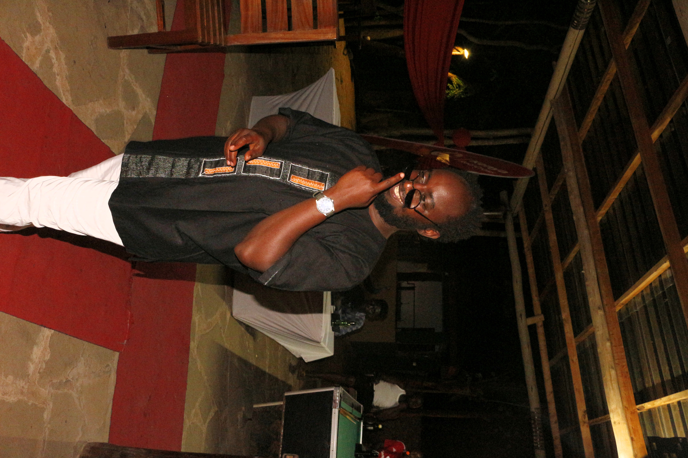

Welcome to My Portfolio
I am a photographer and designer based in Nairobi, Kenya, currently sharpening my skills to become a world‑class front‑end developer. With hands-on experience in Python, machine learning, Shell scripting, and creating intuitive developer tooling, I combine creative vision with technical discipline to build thoughtful, usable interfaces.
What I Do
- Development — Full-stack applications, APIs, and data visualization tools using modern technologies.
- Python & Data Science — Machine learning models, data analysis, and predictive analytics for business insights.
- Design & Photography — Capturing moments and stories through the lens across various events and locations.
Why It Matters
My creative background informs each design decision, while my technical skills ensure reliable, maintainable code. This blend of artistry and engineering lets me solve problems with both empathy and efficiency.
I’m energized by building tools that empower people—whether it’s a quote to uplift someone’s day or a recommendation for a dream travel spot across Africa. Designing with empathy, building with precision: that’s how I try to make every codebase human-centered and every interface inviting.
Say hi if you this this person on the street

